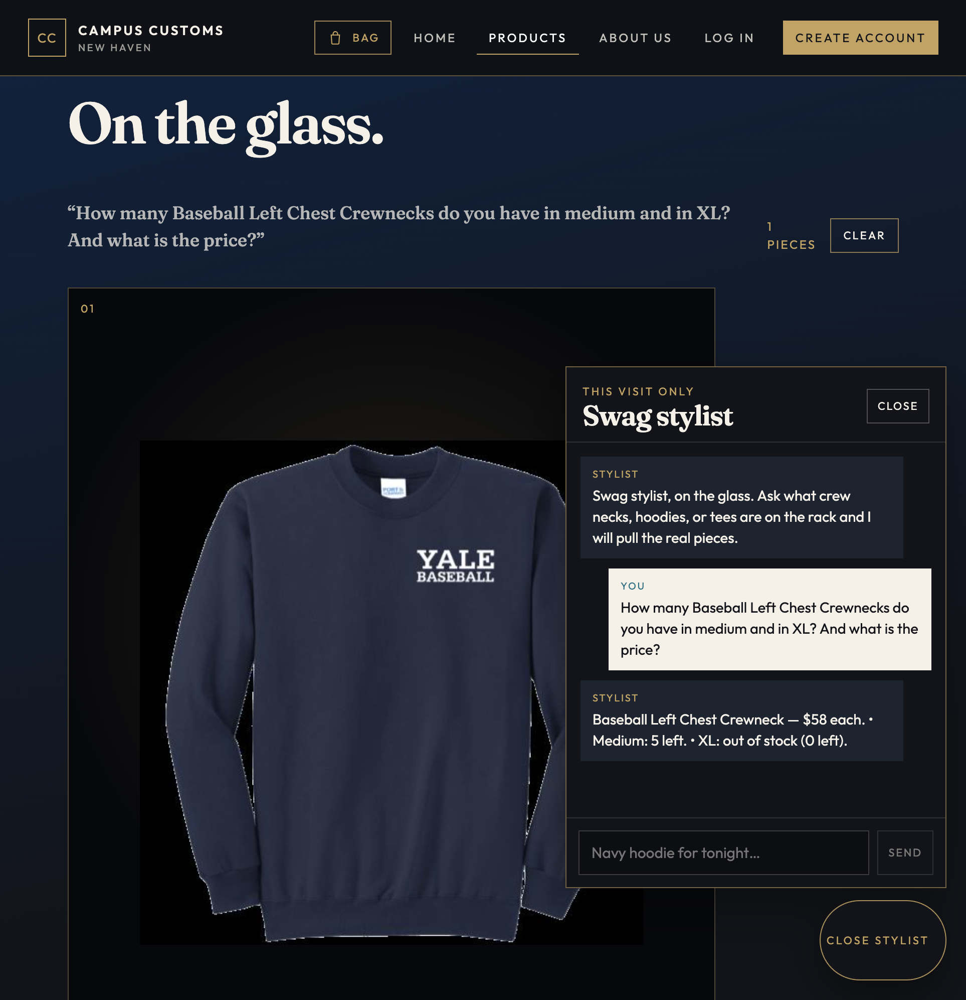
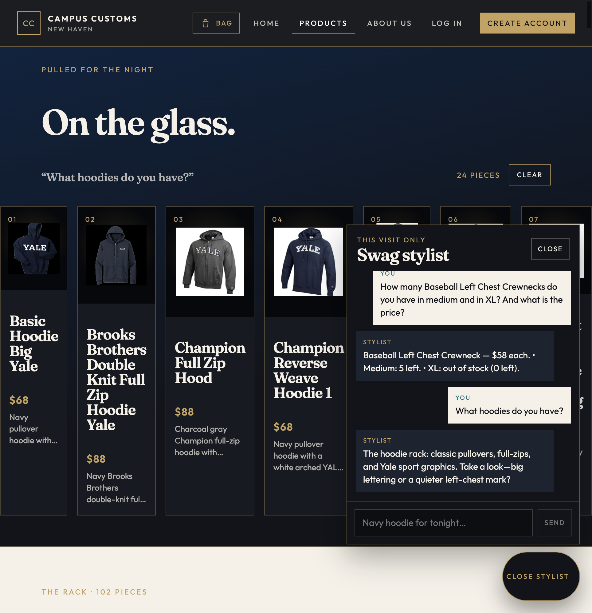
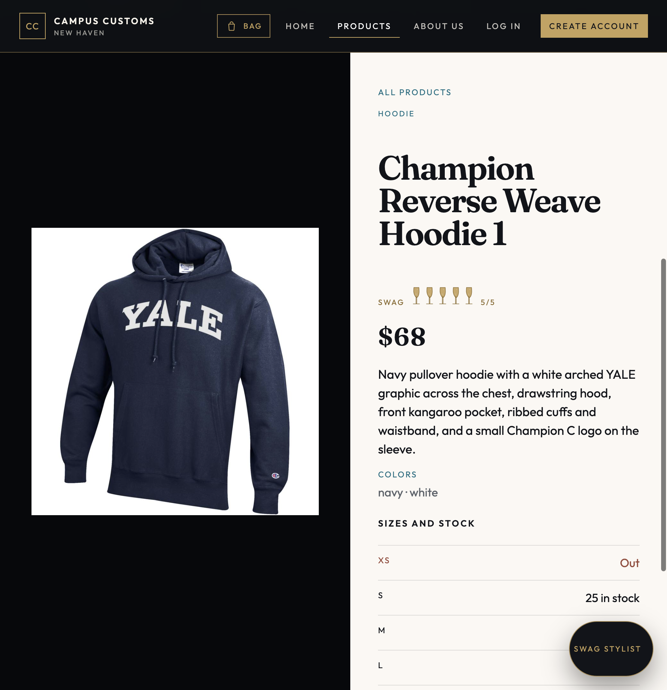
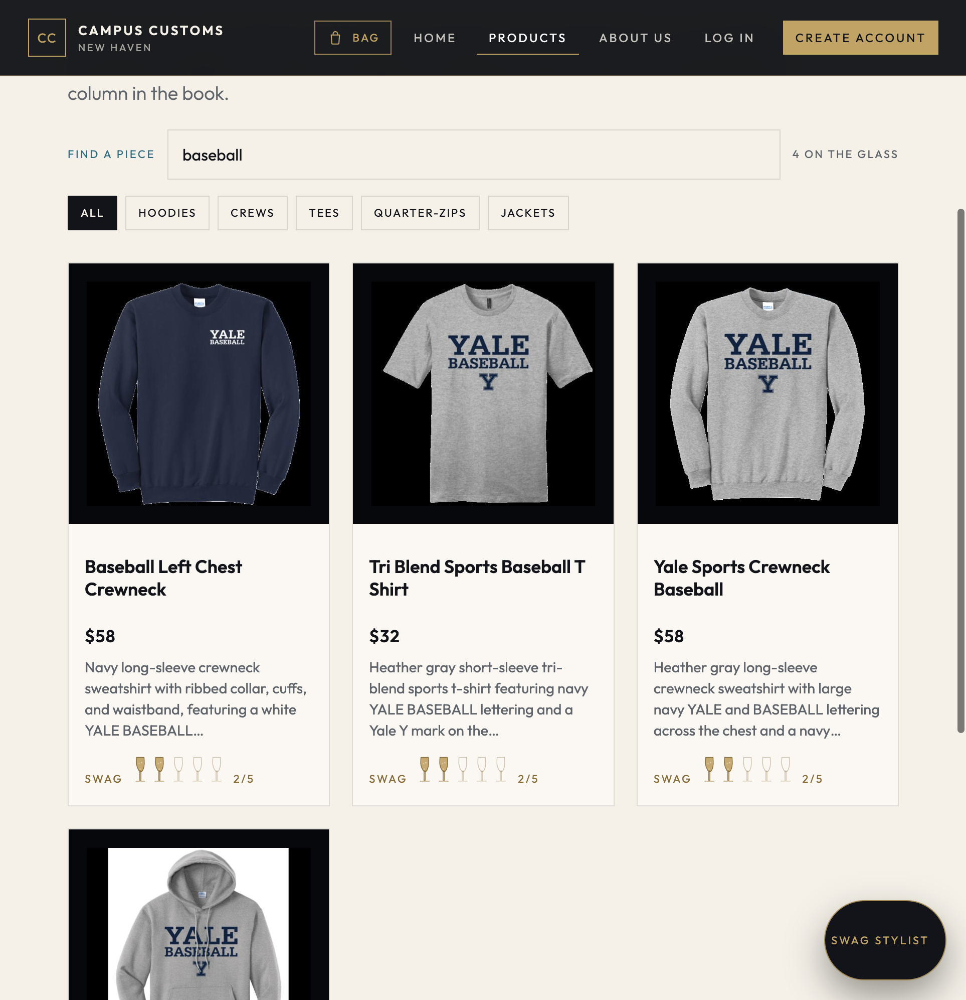

Campus Customs — app check
Live site tested on October 22, 2026 with the front end (Vite) and back end (FastAPI + PydanticAI) running against data/campus_customs.db.
Check 1
Chat checks an item's inventory and price

Asked the stylist how many Baseball Left Chest Crewnecks are in medium and XL and what they cost. It answered $58, 5 left in medium, XL out of stock (0 left), which matches the catalogue price and the inventory rows in the database (M = 5, XL = 0). The stock comes from the tools, and the sold-out size is stated plainly.
Check 2
Dynamic search-result cards after a category question

Asked "What hoodies do you have?" The agent returned structured product matches, and the page rendered them as cards under "On the glass" (24 pieces, each with image, name, price, and short description) while the chat gave a short summary.
Check 2, continued
A card from the chat still opens the single-item page

Clicked the Champion Reverse Weave Hoodie card that the chat put on the page. It opened the detail view: large image on the left; price, description, colors, and sizes with stock (XS out, S 25 in stock) on the right. The page also brings that piece up under the navigation, which is usability improvement 2.
Check 3 · Usability improvement 1
Search the rack

Typed "baseball" into the Find a piece box on the Products page. The 102-piece rack filtered down to the 4 baseball items, and the counter beside the box reads "4 on the glass," so a shopper finds a piece without scrolling the whole catalogue.